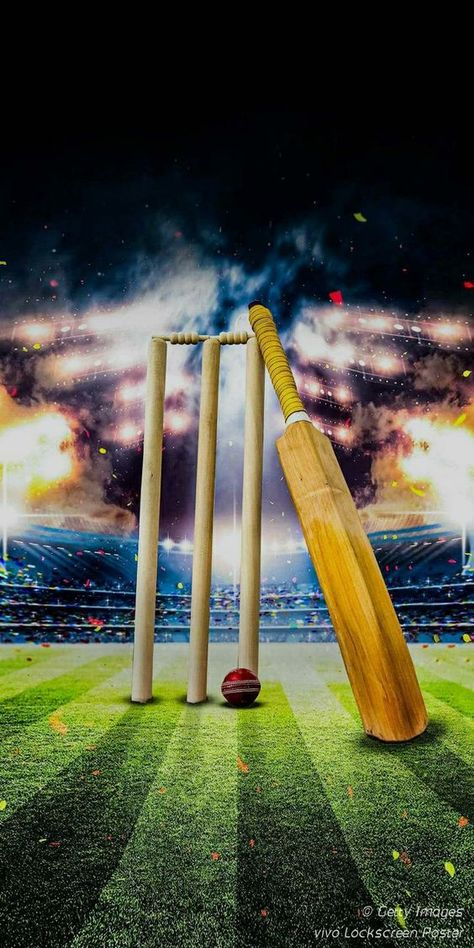

Cricket
Football
Basketball
Tennis
Chess
Carrom
Table Tennis

Click on a sport to know more about it!
Origin: England.
Popular Regions: South Asia, Australia, England.
Fun Fact: Cricket is the second-most popular sport in the world after football.
Origin: England.
Popular Regions: Worldwide.
Fun Fact: The FIFA World Cup is the most-watched sporting event globally.
Origin: United States.
Popular Regions: USA, Europe, Asia.
Fun Fact: Basketball was invented by Dr. James Naismith in 1891.
Origin: France.
Popular Regions: Europe, USA, Australia.
Fun Fact: Wimbledon is the oldest tennis tournament, first held in 1877.
Origin: India.
Popular Regions: Worldwide.
Fun Fact: Chess is often called the "Game of Kings."
Origin: South Asia.
Popular Regions: India, Sri Lanka, Maldives.
Fun Fact: The striker is the heaviest piece in carrom.
Origin: England.
Popular Regions: Asia, Europe.
Fun Fact: Table tennis balls can travel up to 112 km/h.
Origin: Prehistoric times.
Popular Regions: Worldwide.
Fun Fact: The first swimming goggles were made from tortoise shells.
Origin: Ancient Greece.
Popular Regions: India, Netherlands, Australia.
Fun Fact: Hockey is the national sport of India.
Origin: India (British era).
Popular Regions: Asia, Europe.
Fun Fact: The fastest badminton smash was clocked at over 330 km/h.
Origin: Scandinavia.
Popular Regions: North America, Europe.
Fun Fact: Ice skating dates back to 3000 BCE.
Origin: Scotland.
Popular Regions: USA, UK, Australia.
Fun Fact: The longest golf hole in the world is 1,097 yards in South Korea.